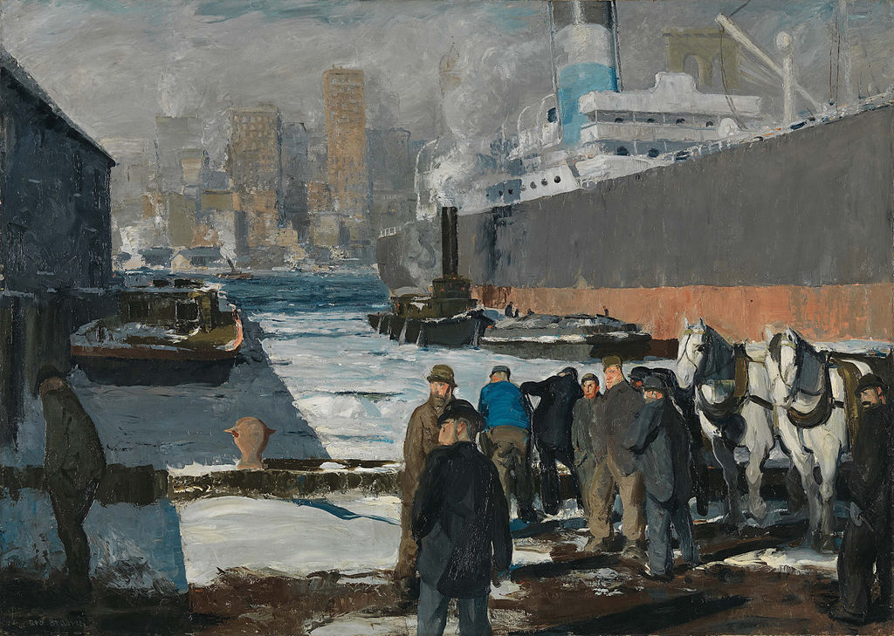

<head>
<meta charset="UTF-8" />
<meta name="keywords" content="drawing, painting" />
<meta name="description" content="drawings by Sunjy" />
<title>Sunjy</title>
<link rel="shortcut icon" type="image/x-icon" href="../../mImages/mCommon/favicon.ico" media="screen" />
<link rel="stylesheet" type="text/css" href="../../mCsses/mCommon/mCssA.css" />
<link rel="stylesheet" type="text/css" href="../../mCsses/mCommon/mCssB.css" />
<link rel="stylesheet" type="text/css" href="../../mCsses/mCommon/mCssC.css" />
<link rel="stylesheet" type="text/css" href="../../mCsses/mCommon/mCssD.css" />
<link rel="stylesheet" type="text/css" href="../../mCsses/mContent/mCssA.css" />
<link rel="stylesheet" type="text/css" href="../../mCsses/mContent/mCssB.css" />
<link rel="stylesheet" type="text/css" href="../../mCsses/mContent/mCssC.css" />
<link rel="stylesheet" type="text/css" href="../../mCsses/mContent/mCssD.css" />
</head>
<script type="text/javascript" src="../../mScripts/mContent/mContentAA.js" /></script>
<script type="text/javascript" src="../../mScripts/mContent/mContentAB.js" /></script>
<script type="text/javascript" src="../../mScripts/mContent/mContentAC.js" /></script>
<script type="text/javascript" src="../../mScripts/mContent/mContentAD.js" /></script>
<script type="text/javascript"></script> 
<script type="text/javascript">
document.write('<div class="mImgAbsolute"></div>');
/*
document.write('<p class="mFontSizeBColor" />From a white paper...</p>');
document.write('<table class="center"><tr><td>');
document.write('');
document.write('</td></tr></table>');
*/
</script>


<script type="text/javascript">
document.write('<p class="mFontSizeBColor" />Men of the Docks</p>');
document.write('<p class="mFontSizeSColor" />“Men of the Docks” by George Bellows depicts a group of men wearing overcoats, standing at a dock in Brooklyn, New York City, together with some draught horses. <br><br>A steam liner looms over them to their right, and in the center is a tugboat. The waters are iced up by winter, and in the background are the skyscrapers of the lower Manhattan skyline.<br><br>The winter weather seems bleak and grey as the men look for work at the docks. The men are looking to the left, and we can only speculate about what has drawn their attention.<br><br>Is it news that no work is available or a notice that the men are required for labor.<br><br>In the early 20th century, day laborers in the New York docks worked depending on the availability of ships to unload, and thus when not working, they often stood nearby, waiting for news that there was work.<br><br>This painting is a significant example of Bellows’ treatment of the subject in which he emphasizes the precariousness of the laborers’ situation.<br></p>');
document.write('<table class="center" /><tr><td>');
document.write('<br>A steam liner looms over them to their right, and in the center is a tugboat. The waters are iced up by winter, and in the background are the skyscrapers of the lower Manhattan skyline.<br><br>The winter weather seems bleak and grey as the men look for work at the docks. The men are looking to the left, and we can only speculate about what has drawn their attention.<br><br>Is it news that no work is available or a notice that the men are required for labor.<br><br>In the early 20th century, day laborers in the New York docks worked depending on the availability of ships to unload, and thus when not working, they often stood nearby, waiting for news that there was work.<br><br>This painting is a significant example of Bellows’ treatment of the subject in which he emphasizes the precariousness of the laborers’ situation.<br>" />');
document.write('</td></tr></table>');
</script>


